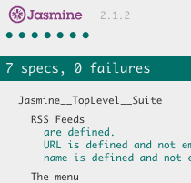
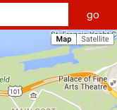
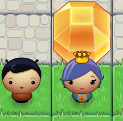

Feed Reader
SITE |
SOURCE
Jasmine test framework on RSS feeds web-based application

Neighborhood Map
SITE |
SOURCE
Favorite coffee shop in San Francisco using google map and Yelp API

Web Optimization
SITE |
SOURCE
Web application optimization via various tools and techniques

Frogger Game
SITE |
SOURCE
Enjoyable 1vs1 Frogger game using javascript and canvas API
Mockup
SITE |
SOURCE
Responsive web design using bootstrap 3